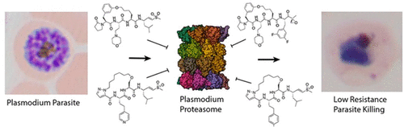

About Me
I am an undergraduate student at Stanford University where I am interested in studying chemistry, computer science, and math.
I work in Matt Bogyo's lab where I was first mentored by John Bennett, focusing on the proteasome inhibitor project for malaria, and am now mentored by Sijie Wang, learning about the S. Aureus serine hydrolase project.
Papers

Covalent Macrocyclic Proteasome Inhibitors Mitigate Resistance in Plasmodium falciparum
John M. Bennett, Kurt E. Ward, Ryan K. Muir, Stephanie Kabeche, Euna Yoo, Tomas Yeo, Grace Lam, Hao Zhang, Jehad Almaliti, Gabriel Berger, Franco F. Faucher, Gang Lin, William H. Gerwick, Ellen Yeh, David A. Fidock, and Matthew Bogyo.
[ACS Site] [pdf]
John M. Bennett, Kurt E. Ward, Ryan K. Muir, Stephanie Kabeche, Euna Yoo, Tomas Yeo, Grace Lam, Hao Zhang, Jehad Almaliti, Gabriel Berger, Franco F. Faucher, Gang Lin, William H. Gerwick, Ellen Yeh, David A. Fidock, and Matthew Bogyo.
[ACS Site] [pdf]